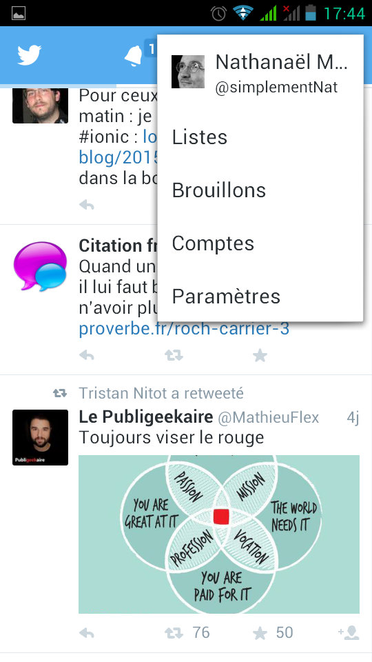
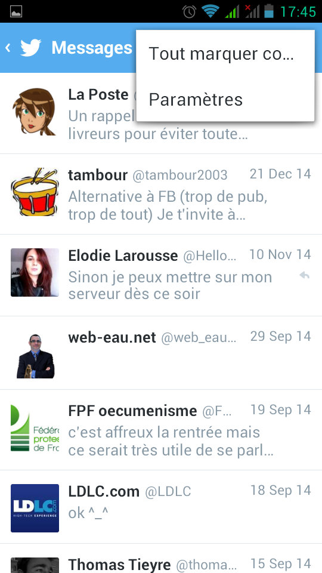

Nathanaël Martel
Nous avons les libellés, nous pouvons les utiliser pour guider l'utilisateur en créant une navigation.
Dimension de l'écran
Dimension de la page
Longueur de la page (ligne de flotaison)
Boutons de navigation
Plan du site
Fil d'ariane
Guided tour
Zone pour différentes classe d'utilisateur
Favoris
Retour
Recherche
Donner du context
où suis-je ?
Donner de la flexibilité
où est-ce que je peux aller ?
Éviter de perdre les gens, et le leur faire perdre du temps
pourquoi je dois aller la bas ? qu'est ce que je vais y trouver ?
Donner un guide
comment j'y vais ? comment je reviens ?
La hierarchie peut être assez réductrice
Ajouter des liens directe
attention, ça peut rendre les choses complexe
avec des liens hypertexte
les utilisateurs ne les voient pas forcément
Assurez vous que le sens est évident
Navigation global
Navigation local
Navigation contextuel
Navigation suplémentaire
Sur tout le système, avec les principales sections
en haut
ou en bas
Présent sur chaque page
La navigation global explicite l'architecture, la rend visible
En complément de la navigation global
 Principe d'Affordance
Les libellés donnnent une indication claire de ce qui se cache derrière
Perception visuel
grouper les éléments par contexte (principe de proximité).
« capacité d’un système ou d'un produit à suggérer sa propre utilisation »
les éléments de navigation doivent paraître actionable (clicable)
« Les éléments qui sont proche les uns des autres sont perçu comme étant relié/associé »
Lorsque l'on conçoit un système de navigation, il est difficile d'anticiper le chemin que prendra l'utilisateur.
Lorsque l'on conçoit un système de navigation, il est difficile d'anticiper le chemin que prendra l'utilisateur.
Mais avec un peu de tests utilisateurs on peut s'en approcher.